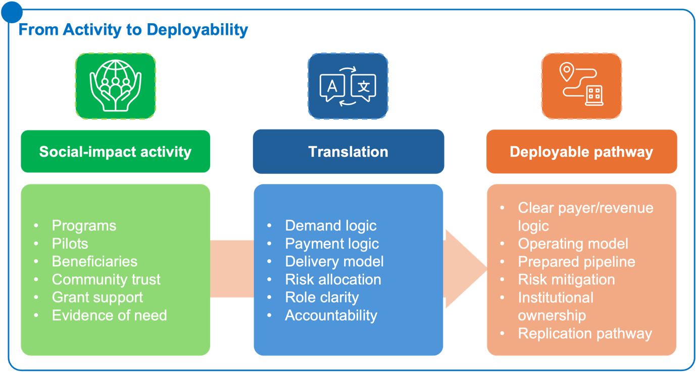
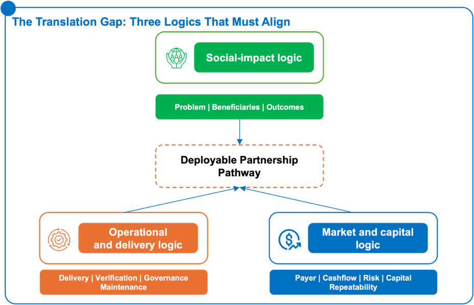
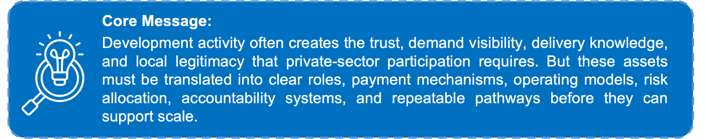
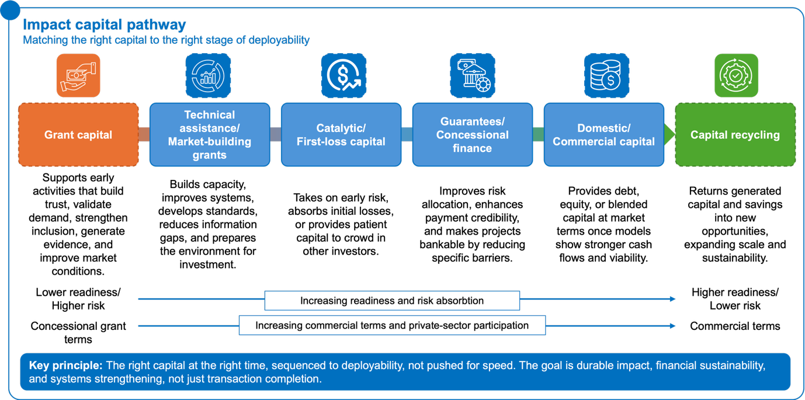
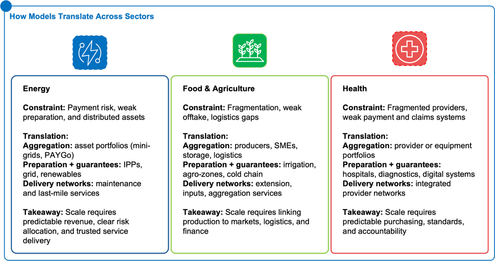
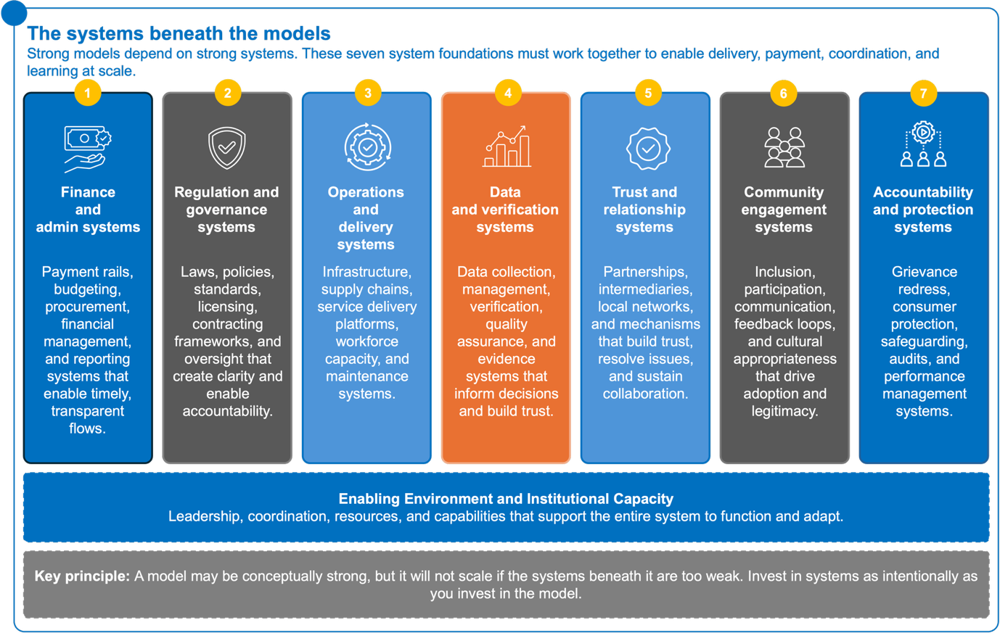
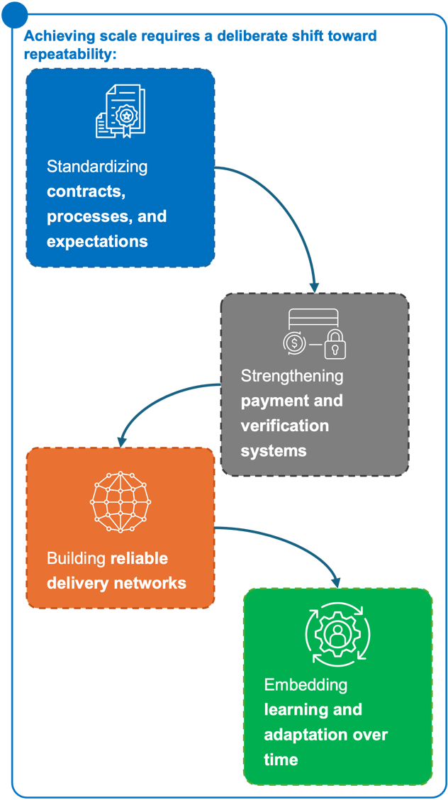
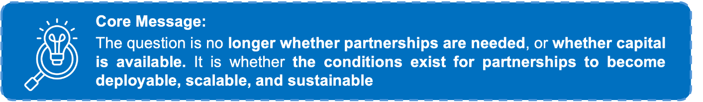

From Social Impact to Deployable Partnership Pathways
Executive Summary
Across Sub-Saharan Africa, development actors, Civil Society Organizations (CSOs), foundations, donors, and public institutions are already doing much of the work that makes markets possible. They identify urgent needs, build community trust, organize local actors, validate demand, test delivery models, strengthen implementation capacity, and generate evidence about what works. Yet these activities often remain framed as programs, pilots, grants, or social-impact interventions rather than as scalable partnership pathways that private-sector actors, financiers, governments, and implementing institutions can assess, finance, execute, and repeat.
The central challenge is therefore not simply the absence of opportunity, impact, or capital. The deeper constraint is translation: the ability to convert promising development activity into structures that are clear enough to attract institutional commitment, private-sector participation, financing, and long-term operational ownership.
In practical terms, this means moving from:
- need to bankable demand;
- beneficiaries to users, clients, purchasers, payers, or offtakers;
- pilots to pipelines;
- activities to operating models;
- community trust to adoption, accountability, and delivery continuity;
- grant support to catalytic capital, preparation, risk mitigation, or market-building support;
- ambition to executable partnership pathways.
The Advancing Partnerships Playbook’s core proposition is that the binding constraint is often not capital scarcity, but deployability. A deployable opportunity has more than impact potential. It has a clear demand signal, a credible payer or revenue logic, an operational delivery model, appropriate risk allocation, sufficient preparation, accountable institutions, and a pathway to replication. This matters especially in sectors such as food and agriculture, energy, and health, where social need is high, delivery systems are often fragmented, and private-sector participation can be valuable but difficult to structure. The issue is not whether these sectors matter. It is whether opportunities are organized in a way that allows different actors to participate sustainably.
The Translation Gap
Partnerships often stall because different actors describe the same opportunity in different languages. Development actors may speak about beneficiaries, inclusion, impact, community trust, and theory of change. Private-sector actors and financiers may ask about clients, revenue, repayment, risk, cash flow, guarantees, margins, and scale. Governments may focus on policy alignment, fiscal exposure, procurement, accountability, and political feasibility. These perspectives are not incompatible. Strong partnerships require all of them. But when they are not translated into a common operating logic, promising opportunities remain stuck between social-impact intent and investable execution.

A program may have beneficiaries but no defined payer. It may demonstrate need but not bankable demand. It may generate impact but lack a revenue, reimbursement, or purchasing mechanism. It may build community trust but fail to convert that trust into adoption, payment reliability, provider performance, or long-term delivery continuity. The Advancing Partnerships Playbook therefore acts as a practical translation tool between three logics:

1. Social-impact logicWhat problem is being solved, for whom, and with what intended outcomes?
2. Operational delivery logic
How will the product, service, infrastructure, or intervention be delivered, verified, governed, maintained, and improved?
3. Market and capital logic
Who pays, what risks are covered, what capital is required, what cash flows exist, and what makes the opportunity repeatable?
The goal is not to force every development activity into a commercial model. Some activities will remain appropriately grant-funded or publicly financed. The goal is to identify where social-impact activity has already created the foundations for sustainable market participation – and where additional structuring is needed before private-sector capital, capability, or delivery capacity can enter credibly.

Why Partnerships Stall Before They Scale
Partnerships between development actors, CSOs, public institutions, and the private sector rarely stall because the underlying social need is unclear. In many cases, the need is well understood, the social-impact logic is compelling, and actors are already delivering meaningful work on the ground. The challenge is that these activities are not always structured in ways that make scale, sustainability, and private-sector participation possible. The core issue is therefore not a failure of intent. It is a failure of translation, structuring, coordination, legitimacy, and institutional alignment. Before selecting a partnership model, financing instrument, or implementation pathway, actors must first diagnose where the opportunity is breaking down.
A promising initiative may have strong community relevance but no clear payer. It may have a compelling theory of change but no capital deployment pathway. It may have committed partners but no coordination owner. It may have private-sector interest but weak payment credibility, unclear risk allocation, or limited implementation readiness. These gaps prevent opportunities from becoming investable, scalable, repeatable, and legitimate.
The Diagnostic Shift
The most important shift for institutions is from solution-first thinking to constraint-led diagnosis.
Different constraints require fundamentally different responses. If the constraint is weak payment credibility, additional technical assistance will not unlock scale. If the constraint is fragmented delivery, financing instruments alone will not create coordination. If the constraint is weak legitimacy, capital availability will not ensure adoption. If the constraint is poor preparation, project lists will not translate into pipelines.
Only once this constraint is clear can actors select the appropriate partnership model, institutional role, financing instrument, and implementation pathway.
Partnership readiness is also shaped by actor incentives and political economy
The full Playbook asks not only who is involved, but who controls approvals, who pays, who bears risk, whose commitments are credible, who benefits from ambiguity or delay, and who already holds trusted delivery relationships. It also asks who owns, leads, and benefits locally. This matters because a technically sound model can still fail if authority, incentives, legitimacy, delivery capability, and accountability sit in different places. Deployable partnerships must therefore align formal mandates with credible execution roles, local ownership, and clear accountability over time.
From Diagnosis to Design: Choosing the Right Partnership Model
Once the binding constraint is clear, the next step is to identify the partnership pathway most likely to unlock scale, sustainability, and participation. The Playbook does not propose generic partnership types. Instead, it presents three distinct models, each designed to address a different structural constraint that prevents social-impact activity from becoming a deployable, investable, and repeatable pathway.
Different constraints require fundamentally different responses. Applying the wrong model – or the right model to the wrong problem – often leads to stalled partnerships, inefficient capital deployment, or repeated pilot cycles without scale.
Constraint-Led Model Selection
If the main constraint is… | Then the primary model is… |
Fragmented actors, assets, or contracts | Aggregation & Warehouse Platforms |
Weak preparation, unclear risk, or low execution confidence | Project Preparation + Guarantee Platforms |
Fragmented service delivery and weak coordination | Predictable Delivery Networks |
Institutions and Roles Matter as Much as Models
Models require clear institutional roles and credible actors to succeed. True viability depends on explicitly defining who funds, coordinates, manages risk, operates assets, handles revenue, and ensures long-term accountability. Without this alignment, even the best models will fail to execute.
Capital must also be sequenced to readiness.
The full Playbook introduces an Impact Capital Continuum to help actors match the right form of capital to the right stage of deployability. Some opportunities remain appropriately grant-funded because they build trust, validate demand, support inclusion, or strengthen market conditions. Others may require technical assistance, catalytic capital, first-loss capital, guarantees, concessional finance, liquidity facilities, domestic capital, commercial capital, or capital recycling as demand, payment, risk allocation, and delivery systems become more credible. The purpose is not to push every opportunity toward commercial finance, but to ensure that capital follows readiness rather than substituting for structure.

Translating Models into Sector and Country Pathways
The three partnership models – aggregation, project preparation with risk coverage, and predictable delivery networks – address common structural constraints. However, they do not operate in a vacuum. Their effectiveness depends on how they are translated into the operational realities of specific sectors and country contexts.

Across Sub-Saharan Africa, opportunities in energy, food and agriculture, and health face different constraints, revenue logics, delivery structures, and accountability requirements. As a result, the same model can take very different forms depending on where and how it is applied.
Country Context Shapes Execution – Not Model Choice
While sector realities shape what must work, country contexts determine how and at what pace models can be implemented.
A critical discipline is to separate:
- Model selection (driven by the binding constraint), from
- Model adaptation (driven by context)
Country context does not determine which model should be chosen. Instead, it determines what conditions must be strengthened, sequenced, coordinated, or de-risked for that model to function.
 System Readiness Before Scale
System Readiness Before Scale
A common failure pattern is attempting to scale before core systems are ready. Even well-designed partnerships will stall if: payment systems are unreliable; coordination mechanisms are weak; implementation capacity is uneven; incentives across actors are misaligned; governance is unclear; or legitimacy is not established.
Key implication: Scaling is not only a function of model design – it is a function of system readiness.
The full Playbook identifies the systems beneath each model. These include financial and administrative systems, regulatory and governance systems, operational and delivery systems, data and verification systems, relational and trust-based systems, community engagement systems, and accountability and protection systems. Payment rails, procurement processes, regulatory approvals, logistics, delivery capacity, data infrastructure, verification mechanisms, feedback loops, and grievance channels all shape whether a model can move from design to execution. A partnership model may be conceptually strong, but it will not scale if the systems beneath it are too weak to support delivery, payment, coordination, and learning.

From Insight to Action: What Institutions Should Do DifferentlyAcross sectors and country contexts, the central challenge is not the absence of opportunity, capital, or institutional ambition. These elements are already present in most partnership ecosystems. Development actors are generating demand visibility, building trust, testing delivery models, and strengthening local capacity. Governments are setting priorities, and private-sector actors are willing to engage where conditions are credible. The constraint has been the difficulty of translating these elements into pathways that can be structured, executed, and sustained over time.
Partnerships begin to scale when four elements align within a coherent system:
- Capital logic – linking demand to credible payment and manageable risk
- Social legitimacy – ensuring trust, adoption, and accountability
- Institutional strategy – defining roles and commitments clearly
- Execution architecture – enabling real delivery, coordination, and performance
Where these remain disconnected, initiatives tend to stay at the level of pilots or fragmented programs. Where they align, partnerships can move from activity to pipeline, and from pipeline to repeatable systems.
The Shift in Approach
The starting point for institutions must shift from solution design to disciplined diagnosis. Before mobilizing capital or selecting models, the critical question is: What is the binding constraint preventing this from becoming deployable?
In many cases, the constraint is not funding, but something more specific – weak demand visibility, unreliable payment systems, insufficient preparation, misallocated risk, lack of coordination, or gaps in legitimacy. Addressing the wrong constraint often leads to well-resourced initiatives that still fail to scale. Once this constraint is clear, development activity must be translated into structured partnership architecture. Trust, local presence, and delivery experience need to be converted into clearer elements that other actors can act on:
- Defined payers and revenue pathways
- Credible operating and delivery models
- Explicit risk allocation
- Clear roles across institutions
- Strong accountability and feedback systems
Only when these elements are visible and structured can partnerships attract sustained participation and long-term ownership.
CSOs are strategic contributors to deployability, not only outreach or implementation partners. The full Advancing Partnerships Playbook highlights the role of CSOs in validating demand, building trust, surfacing adoption barriers, identifying community risks, strengthening accountability systems, and protecting inclusion as models scale. It also introduces a CSO readiness lens, asking whether CSOs can support scale without undermining mission, legitimacy, or trust. At the same time, CSOs should not be expected to carry financial, payment, policy, or working-capital risks that sit outside their mandate, authority, and resources.

From Models to ExecutionModel selection plays an important role, but only when it follows diagnosis. Aggregation platforms address fragmentation, preparation and guarantee structures address underdeveloped opportunities, and delivery networks organize fragmented service systems. The discipline lies in applying the right model to the right constraint – not in defaulting to preferred instruments or familiar approaches.
Equally important is role clarity. Partnerships succeed when institutions move beyond general ambition and make concrete decisions about how they will participate. In practice, this means answering a core set of questions:
- Who will fund and prepare the opportunity?
- Who will coordinate and maintain momentum?
- Who will absorb or mitigate key risks?
- Who will deliver services or operate the model?
- Who will pay or purchase?
- Who will ensure accountability and legitimacy over time?
Where these roles remain ambiguous, partnerships often stall between design and implementation.
Building for Scale, Not One-Off Success
Many initiatives succeed once – through exceptional relationships, bespoke arrangements, or intensive support. Fewer are structured in ways that allow them to be repeated.
Achieving scale requires a deliberate shift toward repeatability:
- Standardizing contracts, processes, and expectations
- Strengthening payment and verification systems
- Building reliable delivery networks
- Embedding learning and adaptation over time
The Playbook also adds a discipline of monitoring and appropriate use. Partnership performance should be measured not only by capital mobilized or services delivered, but also by payment reliability, delivery continuity, inclusion, legitimacy, grievance resolution, local ownership, domestic capital participation, institutional capability, coordination quality, and systems transformation over time. The Playbook also cautions that not all development activity should be commercialized. Grant funding, public delivery, or simpler approaches may remain more appropriate where revenue logic is weak, equity risks are high, accountability cannot be managed, transaction costs exceed benefits, or commercialization would create mission drift
The key test is simple: Can this work again without being redesigned from scratch?
The Core Takeaway
This Executive Summary does not seek to replace development activity or to push all programs into commercial models. Its purpose is to translate what already exists – demand, trust, delivery experience, and institutional ambition – into pathways that can support sustained participation and long-term impact.
The shift is straightforward but decisive:

From visible impact to deployable pathways. From activity to structure to sustained execution.